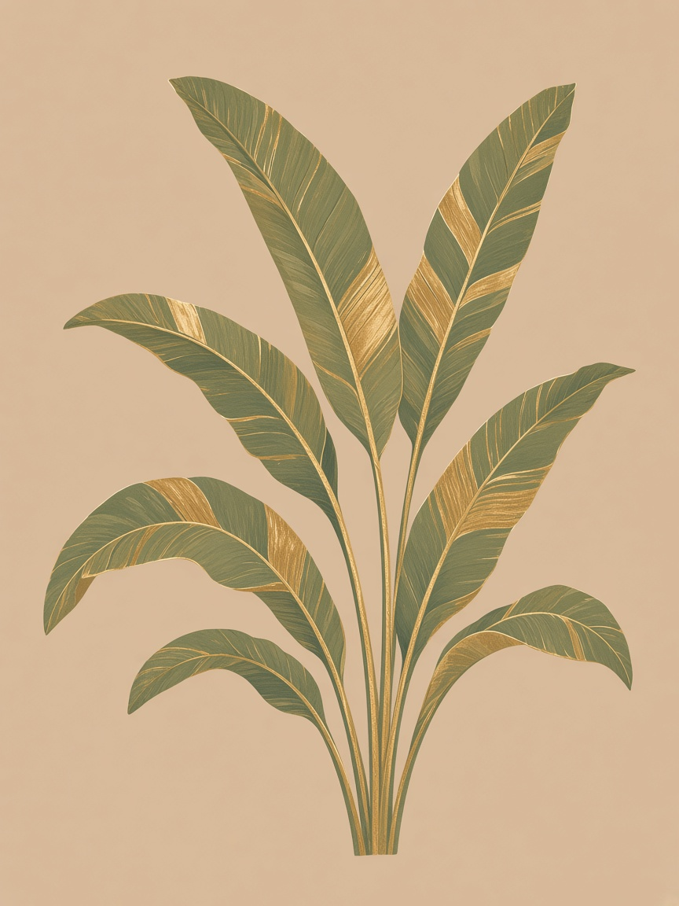
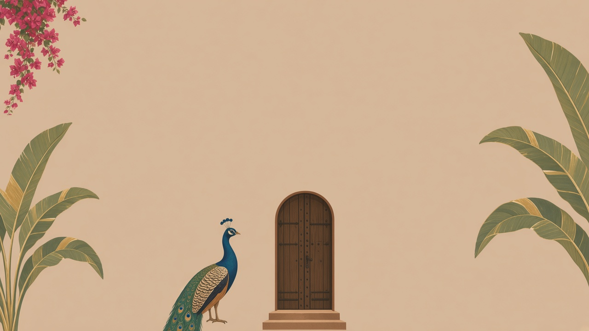
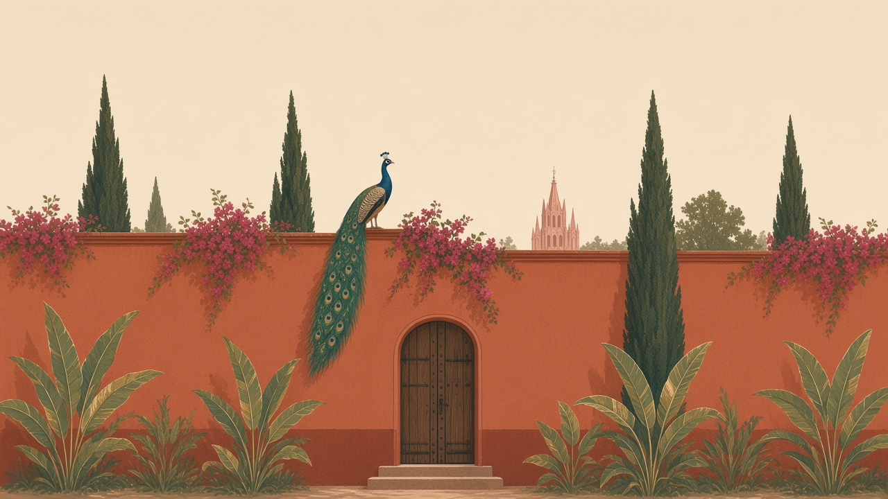
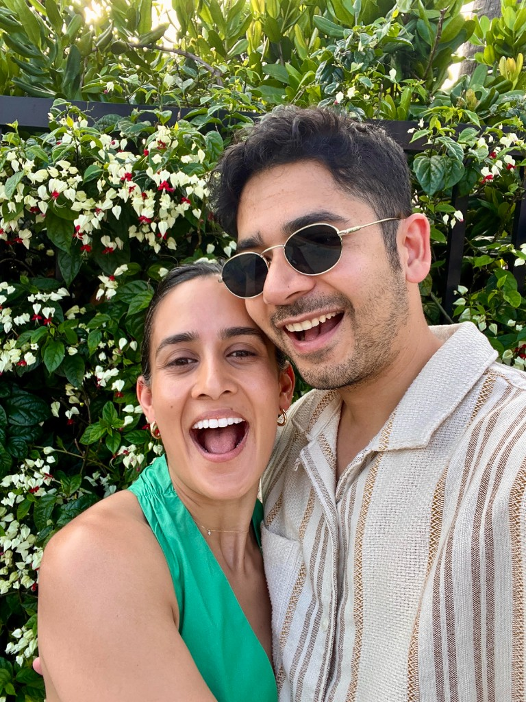
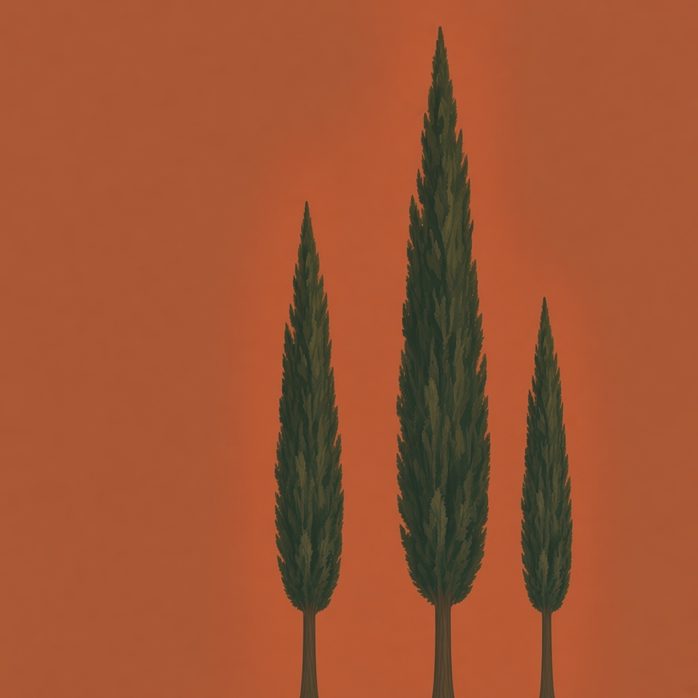
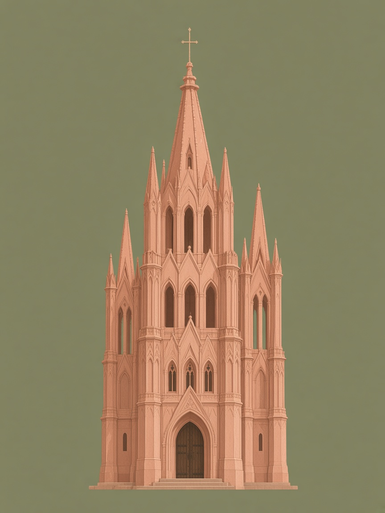
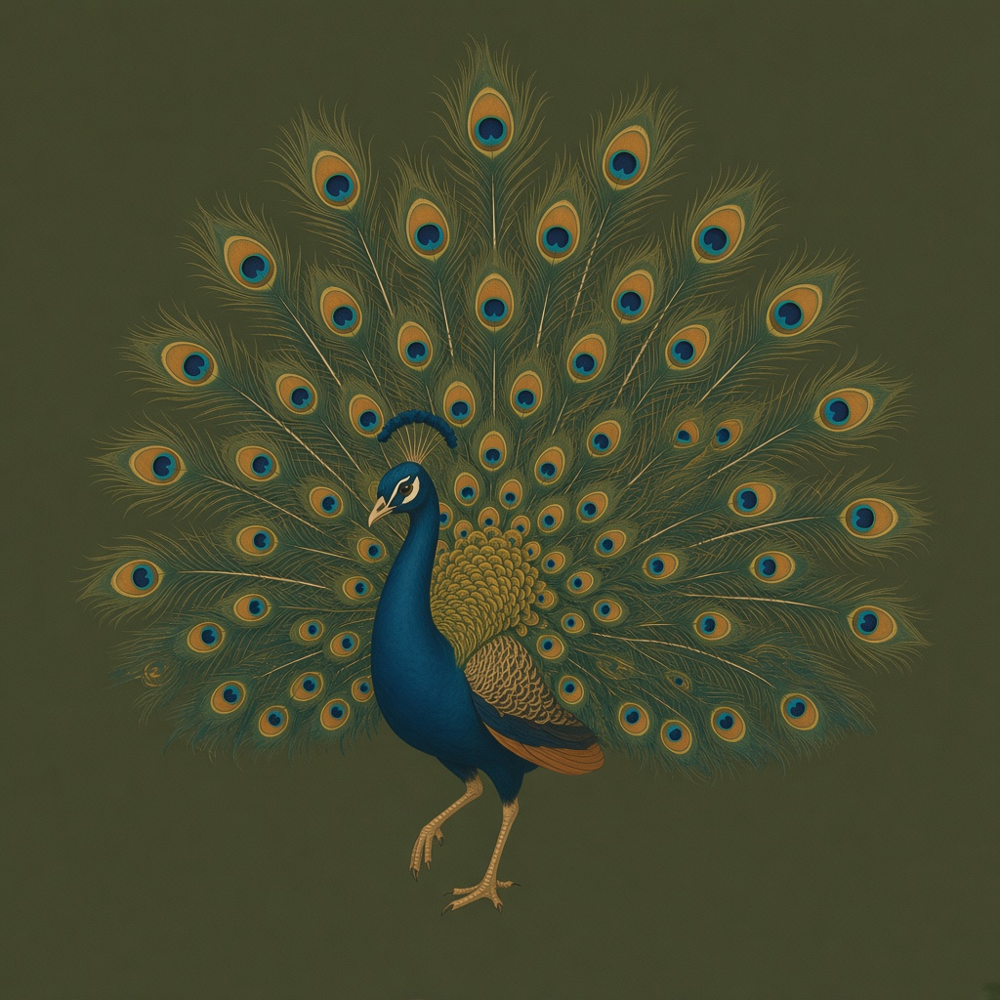
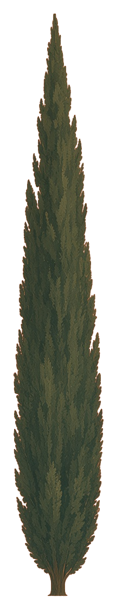

Welcome
Dinner
Fri, April 16 · 7–11 pm
Live Aqua · Fiesta colour attire

We couldn’t find that name. Try your full name as it appears on your invitation, or text us at [[PHONE]] and we’ll sort it out.
The wedding of
April 16 – 17
San Miguel de Allende, MX


We met the old-fashioned way: through friends who knew us better than we knew each other.
Rohan and Avanti grew up together on Staten Island in their earliest years — and years later, by complete chance, ended up in the same apartment building. That’s where Sonali and Avanti became neighborhood buddies: movie nights, dinners, and plenty of Avanti complaining about chronic singlehood. Meanwhile, Shubh and Rohan had their own rhythm — sports, nights out, and the kind of friendship that eventually turns into matchmaking.
When Shubh was finally single (and finally ready), Rohan suggested he date Avanti. They set us up on a true blind date: no numbers, no Instagram, no pre-stalking. Just two people walking into a room.
The rest might have been history — until Avanti tore her ACL. Shubh showed up as an incredible caretaker, the kind of steady kindness that makes everything clearer. Avanti was sold. Within a couple of months we were seeing each other every night, and eventually we moved in together.
What we share is simple and a little ridiculous in the best way: fitness and health, laughing until it hurts, cuddling, traveling, AI rabbit holes, the same kinds of food, being unapologetically bougie, and squeezing the most out of life. Above all, Avanti fell for how kind Shubh is — not just to her, but to everyone she loves.
And somehow, two childhood friends, one building, and one perfectly timed blind date got us here.
Schedule

Fri, April 16 · 7–11 pm
Live Aqua · Fiesta colour attire

Sat, April 17 · Baraat 3 pm, vows 4 pm
Rosewood SMA · Indian formal

Sat, April 17 · Cocktails 6:30 - 11pm
Rosewood SMA · Black tie or Indian formal

Sat, April 17 · 11:30 pm – late
Rosewood SMA · Keep the glam
San Miguel doesn’t have its own airport, so you’ll land nearby and drive the last stretch. Book a private transfer ahead of time — it’s smoother than hoping for a taxi at the curb.
The closest international airport, about 1 hour 15 minutes by car. Solid connections through major US hubs.
The most flight choices, but about 3.5–4 hours by car. Worth it if you’re adding a few days in CDMX before or after.
Most of the weekend happens at the Rosewood, but centro is small and walkable, so any of these will keep you close to the festivities — and to each other.
Nearby
Restored colonial mansions a few minutes’ walk from the Jardín. Great if you want centro energy and a short stroll to everything.
Design-forward boutique with a strong pool and art collection; walkable to the centre.
Modern resort with a big spa and gardens; short taxi from centro if you want more of a retreat vibe.
Travelling as a group or with kids? A rental near the Jardín puts everyone under one roof and a short walk from the action.
You are traveling across the globe to celebrate with us in Mexico, so your presence means the world to us and is all we ask for.
If you’d still like to contribute to our registry or honeymoon funds, please use the link below.
Registry